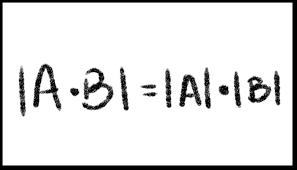

La suma y resta de determinantes de matrices no son operaciones elementales como la suma y resta de números. En general, el determinante de la suma de dos matrices no es igual a la suma de sus determinantes individuales. El determinante de una matriz es un valor numérico asociado a ella, calculado a partir de sus elementos.
